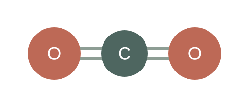

CO₂ is
exhaled.
RLT formalizes the written claim “CO₂ is exhaled” as a physical reading point: preserve the words, register how they are read, prove specified mathematical relationships, and identify the evidence needed for physical correspondence.
A worked example for researchers and engineering reviewers. Existing RLT records check molecular-count arithmetic; this exhibit does not claim a kernel-certified exhalation theorem or a measured individual breath.
For engineering and research applications, this exhibit provides an inspectable route from one readable physical claim to the written source, conventions, RLT proofs, and clearly named verification limits. It is a demonstration of the method, not the complete science of CO₂.
A physical statement, specified.
The expression concerns respiration, a physical process. Evidence about exhaled breath is an empirical matter; formal checking governs explicitly stated mathematical relationships and consequences.
RLT formalizes the written claim. The exhalation reading point specifies what a physical statement means and which evidence would establish its applicability. A formal proof checks its formal consequences; a laboratory observation is not produced by a theorem prover.

CO₂ is exhaled.
A physical statement preserved as written, with the subject, process, and intended scope made explicit.
Breath measurements
Empirical support belongs in a cited observation or measurement record. This exhibit does not assert that a specific measurement has been registered in RLT.
Read the formula.
Check the count.
The existing RLT
co2-and-o2
record names one CO₂ molecule and one O₂ molecule as reading points and binds three arithmetic claims to proof files. These are mathematical counts under declared conventions, not proof that any particular molecule was physically observed.
Read the record ↗
Five recorded atoms across the two molecules; stored as 1 + 1 + 1 + 1 + 1 = 5.
Proof file ↗The counts are identified in the source record as kernel-checked; this static website does not independently execute the kernel. No fresh certificate, run ID, or exhalation theorem is implied.
Four layers.
One accountable reading point.
What is written?
Preserve “CO₂ is exhaled” and the molecular notation exactly as recorded, with sources and scope.
How is it read?
Distinguish chemical-formula interpretation (
CHEM-MOLFORMULA
) from arithmetic notation (
NAT-DEC
).
What is proved?
Kernel-check the stated arithmetic claims under registered axioms and assumptions. Report precisely what follows.
What is observed?
Associate physical claims with cited measurements and observation records, without equating formal validity with empirical verification.
Why this matters: a verified implication only establishes the stated conclusion relative to its formal premises. The correspondence of those premises to exhaled CO₂ needs its own evidence and review.
Check. Explain.
Trace. Compose.
These are the implemented RLT workflow commands documented on the main technical site. They make the record inspectable while keeping proof acceptance, source fidelity and physical applicability distinct.
Check derivations
Replay explicit proof steps relative to registered axioms and assumptions.
Explain verdicts
Show the formal statement, proof result and attributed source and physical correspondence assessments.
Trace dependencies
Inspect theorem dependencies, definitions, assumptions, source records and hashes.
Compose checked results
Assemble kernel-accepted components and independently discharge conditional assumptions where supported.
Inspect the record.
This is a self-contained exhibit with a deliberately short source list. The public RLT repository is the authority for theorem statements and proof files. This site is a presentation layer, not a substitute proof engine. A local reading-point manifest labels what is checked and what remains an evidence task.
Independent checker, verified mathematics, trust boundaries
points/co2-and-o2.yaml
· formula, counts, physical-status metadata
Rust implementation, proof checker and verification tests
Formal results and reproducibility protocols beyond this example
What would complete the exhalation exhibit?
Register a precisely scoped physical claim
For example, a statement about measurable CO₂ in human exhaled breath, with operational definitions and an identified evidence source. This is not yet presented here as an accepted RLT physical correspondence.
Pin observations and assumptions
Identify measurement methods, dates, source documents, scope and limitations. A literature source can support a general physiological statement without substituting for a measurement of a particular breath.
Publish a reproducible verification record
Pin repository commit, statement/proof paths, checking command and captured output. Publish what the checker actually certified and explicitly identify any unestablished correspondence.